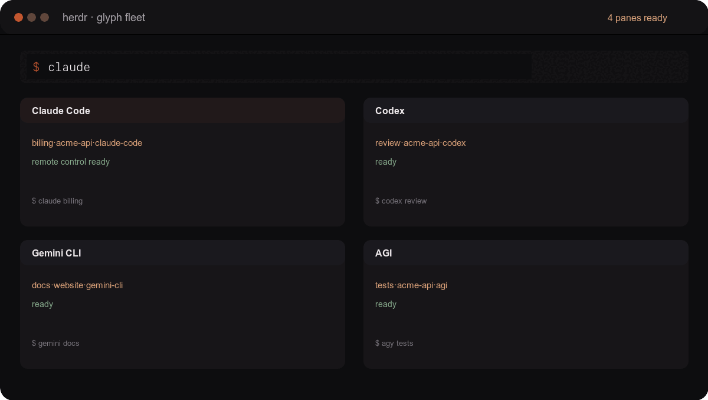
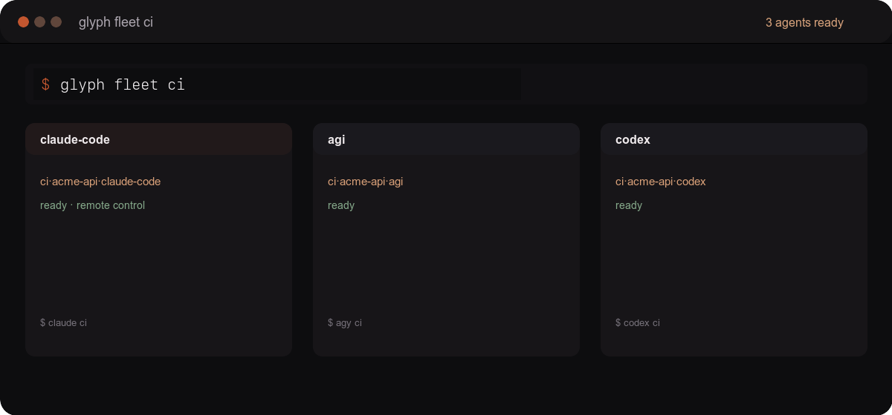

Without glyph
- agent-5e
- zsh
- node
Which project? Which machine? What task?
Name every agent session before it starts, so every pane tells you the task, project, agent, machine, and time.
billing·acme-api·claude-code·macbook-pro·09:12
review·docs·codex·ubuntu-studio·09:08
fleet-ci·glyph·agi·windows-dev·09:03
Run one command and Glyph opens the saved group together. Each agent gets its own named pane, so you can tell what is running at a glance.

The command types itself, then each named terminal pane opens in sequence.
Several agents. Different machines. One glance to find the right session.
Which project? Which machine? What task?
Task · project · agent · machine · date · time
Named at launch. Every time. No manual renaming to remember.
git clone https://github.com/fru-dev3/glyph.git
cd glyph && ./install.sh && exec zsh
GLYPH_DRYRUN=1 claude billing
Copies one file to ~/.config/glyph/ and adds one
line to ~/.zshrc.
You type the simple command you already know. Glyph uses the first word as the label, adds the project, agent, machine, and time, then launches the agent with that name attached.
The demo features three agents. Glyph also wraps these CLIs when they are installed.
codex billing
--dangerously-bypass-approvals-and-sandboxagy billing
--dangerously-skip-permissionsclaude billing
--dangerously-skip-permissionscursor-agent billing
--forcecrush billing
--yolocortex billing
--dangerously-allow-all-tool-callsopencode billing
No extra flagpi billing
No extra flaggemini billing
--yoloThese labels describe what Glyph currently sets. Terminal labels appear in window titles and glyph ls, not inside the agent's conversation list. Fleet adds persistent pane borders. GLYPH_YOLO=1 opts into each adapter's auto-approve flag.
Glyph Fleet opens a saved group of AI agents together in your terminal—one named pane or tab per agent—so Claude, AGI, Codex, and the rest can work side by side.
 Claude
Claudepane 1 · ci · your project AGI
AGIpane 2 · ci · your project Codex
Codexpane 3 · ci · your project
Choose the agents you want to open together. Glyph keeps the group in your local config.
glyph fleet init
Adds ci (Claude, AGI, Codex), review (Claude, Codex), and a cloud example. You need tmux and the agent CLIs to launch them.
Saved to ~/.config/glyph/fleet.conf, or your GLYPH_FLEET_CONF override. Left of = is the fleet name; right is one agent per pane.
ci = claude agy codex review = claude codex cloud = claude:studio codex:studio
Replace studio with your SSH host before using the cloud example. AGI uses the command agy.
See which agents and machines will open before you start them.
GLYPH_DRYRUN=1 glyph fleet ci
Glyph uses your current workspace: Herdr creates one tab per local agent, cmux creates one workspace per local agent, Zellij creates a named pane per agent, WezTerm creates one tab per agent, and a normal shell uses a tiled tmux session. Each tab or pane gets the fleet mark and agent label.
glyph fleet ci
Use glyph presets to list saved fleets. Set GLYPH_FLEET_BACKEND=herdr|cmux|zellij|wezterm|tmux to choose a backend explicitly. SSH slots require the tmux backend.
claude:studio means Claude on the SSH host studio. Replace it with a host you can already reach using SSH.
Install Glyph and the agent on that machine, source Glyph in its zsh config, and keep the project at the same path. Then run glyph fleet cloud.
The agent's mark uses that machine's own tag. Glyph's pane border also shows the SSH host so you can tell remote panes apart.
The defaults work without a config. Open a section when you want to change something.
Every mark is lowercase. Hyphens join words inside a field; · separates fields: billing·acme-api·claude-code·mbp·2026-09-12·0648.
Glyph detects Mac model, WSL/Windows, Ubuntu, and generic Linux. It cannot know a Windows release or tablet model reliably, so set one explicitly: export GLYPH_MACHINE=windows-10.
For a project override, add a line to ~/.config/glyph/names.tsv: the folder name, a tab, then the name. It is normalized to lowercase hyphenated form.
GLYPH_OFF=1GLYPH_SEPGLYPH_FMTGLYPH_RC=0GLYPH_TITLE=0GLYPH_LOG=0GLYPH_DRYRUN=1GLYPH_YOLO=1The wrapper builds the mark before launching the agent. For Claude, it passes -n for the session name and --remote-control for the phone bridge.
Print-mode runs and recognized subcommands, such as claude --print and codex resume, pass through.
Herdr is the recommended outer workspace: launch agents inside existing Herdr tabs and Glyph labels them. glyph fleet currently creates a standalone tmux session, so running it inside Herdr nests tmux. Use Fleet outside Herdr until a native Herdr Fleet backend exists.